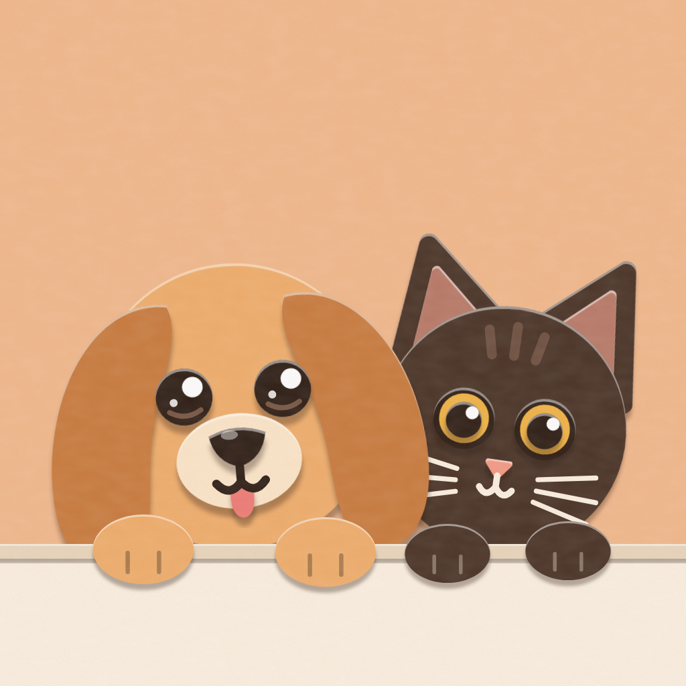

TeddyDEENHow can Ihelp?
Help & contact
In short
- Teddy is home for everything about your pets: profile, vaccinations, appointments, daily routine and lots of petting.
- Teddy is free, without ads and without tracking.
- Questions, bugs or wishes? Write to alexshagov@icloud.com or in the app under Settings › Feedback & Wishes.
Where is my data stored?
On your iPhone or iPad and, if the “iCloud sync” switch is on, in your own iCloud. We have no server of our own and can’t see your data. Details are in the privacy policy.
How do I share my pet with family or a sitter?
Settings › Pack & data. Invite people to your Pack for good. Set up Temporary pet sitting via link or QR code, e.g. for your vacation. Both need an Apple Account with iCloud. You can end shares there at any time.
How do I back up my data?
Teddy creates a backup automatically every day. Under Settings › iCloud & Backup you can export a backup, e.g. to the Files app, and restore it later.
How do I delete all my data?
In Settings, tap your round profile picture on the dog tag at the top and choose Delete account. Teddy then removes all pets, appointments, photos, documents and backups from this device and from your iCloud. To unlink “Sign in with Apple”, go to the iOS Settings › Apple Account › Sign in with Apple.
How do I switch the language?
Teddy speaks English and German and starts in your device’s language. Switch anytime under Settings › Switches › Language, or with DE | EN at the top right of the welcome screen.
Reminders don’t arrive?
Check in the iOS Settings › Notifications › Teddy that notifications are allowed. If a Focus mode is on, they may arrive later.